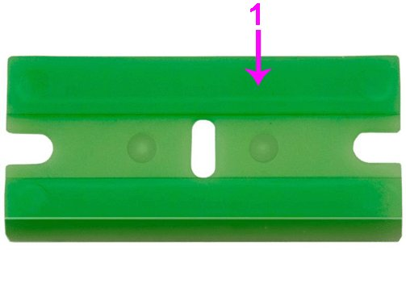
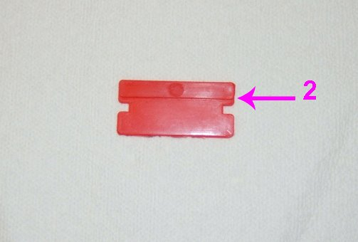
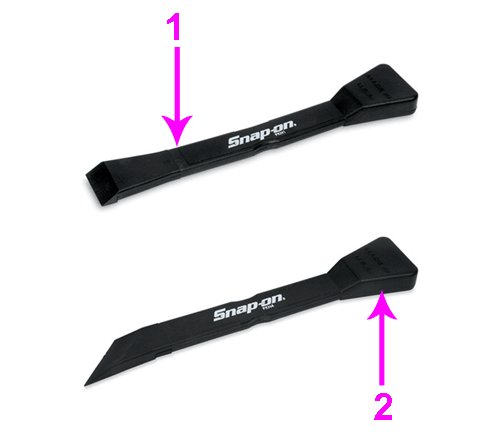
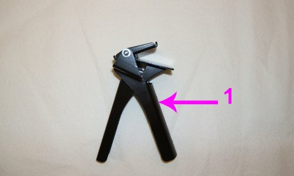

Cleaning Devices and Method For Removing and Applying Sealant
Recommended Cleaning Devices and Method for Removing and Applying RTV SealantGeneral Motors strongly recommends using a plastic razor blade, plastic gasket scraper, a wood scraper or a non-metallic scraper to remove all sealer/gasket material on the surface of engine components that are to be reused. Do not use any other method or technique to remove the sealant or the gasket material from a part.
- Do not gouge or scratch any engine sealing surface during the cleaning process.
- It is not necessary to remove every speck of the old sealer. The appearance of the gasket sealing surface is not critical - the feel is.
- To remove the old RTV sealant from the sealing surface, spray GM Low VOC Cleaner, P/N 19287401 (in Canada, P/N 88901247) or an equivalent, on the mating surfaces and allow it to soak in for 5 minutes to loosen the old gasket material. Use care to avoid getting GM Low VOC Cleaner in any area other than the mating surface to be cleaned.


- Use a plastic razor blade (1), that mounts in a scraper device or a hand held plastic razor blade (2), to remove old RTV sealant from a sealing surface. Use a new blade for each corresponding engine component surface. Hold the blade as parallel to the flat surface as possible.

- Position and work the blade back and forth in the grooved areas of the component to loosen and remove the old RTV.

- When using a plastic gasket scraper with a straight blade (1) to remove old RTV sealant from a sealing surface, hold the scraper as parallel to the flat surface as possible.
Use a plastic gasket scraper with an angle blade (2) and work the blade back and forth in the grooved areas of the component to loosen and remove the old RTV.
- Clean the engine front cover in solvent.
- Dry the engine front cover with compressed air.
Notice
After the final cleaning with GM Low VOC Cleaner and before reassembly, DO NOT touch the cleaned surfaces with your hand. Oils from your skin WILL CONTAMINATE the surface and prevent proper bonding of the new RTV sealant.
- To properly clean the sealing surfaces prior to reassembly, spray GM Low VOC Cleaner, on a folded lint free shop cloth. Wipe the mating surfaces on the engine and front cover and rotate the shop cloth until there are no more visible signs of contamination on the cloth.
- After the final cleaning of the parts, allow 5 minutes for the components to dry before applying new RTV sealant.

- Use a Tube Grip(R) dispensing device (1) or an equivalent to apply the new RTV sealant for the following reasons:
- A precise application of the RTV sealant bead to the component, in the specified amount.
- The dispensing device will squeeze 35 % more material out of the tube, reducing waste.
- Using the device will eliminate most cleanup.